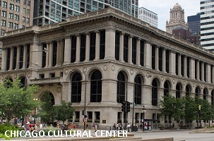
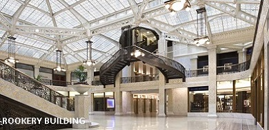
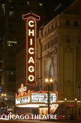
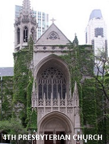
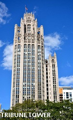
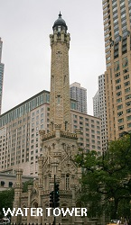
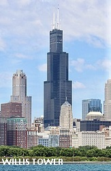
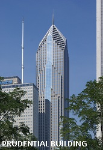

The Chicago Cultural Center
The Chicago Cultural Center is a Chicago Landmark building, opened in 1897 and operated by Chicago's Department of Cultural Affairs and Special Events. It houses the city's official reception venue where the Mayor of Chicago has welcomed Presidents and royalty, diplomats and community leaders. It is located in the Loop, across Michigan Avenue from Millennium Park. Originally the central library building, it was converted in 1977 to an arts and culture center. The city's central library is now housed across the Loop in the spacious, postmodern Harold Washington Library Center which opened in 1991.
The Chicago Cultural Center building was designed by Boston architectural firm Shepley, Rutan and Coolidge for the city's central library in 1892.It was completed in 1897 at a cost of nearly $2 million (equivalent to $61.46 million in 2019). There is a 4-story north wing and a 5-story south wing, and is 104 feet tall, with 3-foot-thick (0.91 m) masonry walls faced with Bedford Blue Limestone on a granite base. It was designed in a generally neoclassical style with Italian Renaissance elements, and capped with two stained-glass domes, set symmetrically atop the two wings.
|  |  |  |
|---|
|  |  |  |  |  |  |
|---|